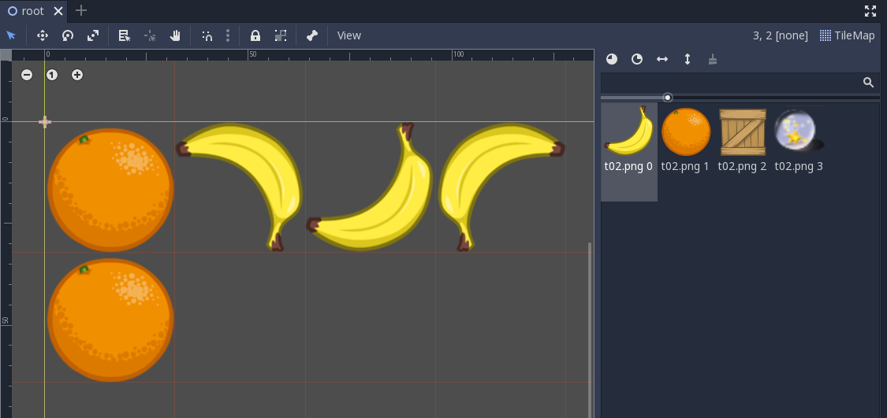

Godot Tilemap Format¶
TSCN¶
Tilemap is a type of TSCN Node2D. For a TSCN Node description, see
Note
Data format here is try and figured out from TSCN file, only for resource handling in loader, not for implementation reference.
TileMap in TSCN file example:
[ext_resource path="res://autoset.tres" type="TileSet" id=1]
[ext_resource path="res://tset1.tres" type="TileSet" id=2]
[node name="TileMap" type="TileMap" parent="."]
visible = false
scale = Vector2( 0.25, 0.25 )
tile_set = ExtResource( 2 )
cell_size = Vector2( 128, 128 )
cell_quadrant_size = 8
format = 1
tile_data = PoolIntArray( 0, 1, 0, 1, 1073741824, 0, 2, 0, 0, 3, 1610612736, 0, 65536, 1, 0 )
tile_date¶
TileMap is handled by
class TileMap : public Node2D { ... }
see GodotEngin/scene/2d/tile_map.h.
C struct for tile:
union PosKey {
struct {
int16_t x;
int16_t y;
};
uint32_t key;
};
union Cell {
struct {
int32_t id : 24;
bool flip_h : 1;
bool flip_v : 1;
bool transpose : 1;
int16_t autotile_coord_x : 16;
int16_t autotile_coord_y : 16;
};
uint64_t _u64t;
Cell() { _u64t = 0; }
};
A 1D 32 bits int array in decimal digital string.
{kind=link}
I’d like raw html here.
| Ndoe Data | Data Formatted | Details |
|---|---|---|
| ... | 161061273665536 | 6000 0000h: id, h, v = 0, 1, 1 ? 65536: pos(x, y) = 0, 1 |
Text follow raw html table is visible!
Node Data Data Formatted Remarks tile_set = ExtResource( 2 ) ExtResource(2) = tset1.tres Tileset ...
Text follow reStructuredText table is not visible?